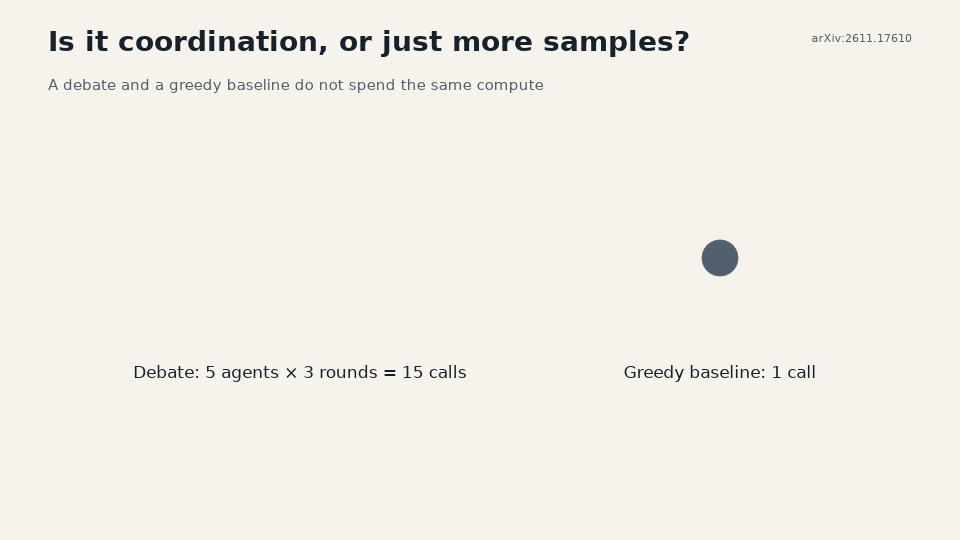

Untangling inter-agent coordination, independent ensembling, and test-time compute in multi-agent LLMs across 9 primary studies, 516 unique configurations, and 834 baseline contrasts.
Why comparing a 5-agent, 3-round debate (15 model calls) against 1 greedy pass confounds communication with sample multiplicity.

Audit AutoGen, LangGraph, CrewAI, Inspect AI, or JSONL traces locally:
pip install pace-eval pace studio pace audit run_trace.jsonl pace dynamics debate_log.jsonl --null null.jsonl
Click any rung to inspect its empirical performance across the 9-study corpus and the directional feasibility rule required for valid inference.
Compute the single-agent sample count ktok matching a K-agent, T-round debate run before claiming coordination gains.
Drop-in verification block for peer review or experimental setup sections:
Short Reviewer Parity Check (PACE, arXiv:2611.17610): 1. Baseline rung: State strongest single-agent Category [A/B/C/D] (policy and k). 2. Resource vector R: Report <R_reason, R_token, R_cost, R_lat, R_sample, R_sys> on both arms. 3. Feasibility direction: Positive claim requires baseline resource ≥ MAS; null requires ≤. 4. Frontier gap & controls: Report Δ_frontier 95% paired bootstrap CI at k ≥ k_tok.